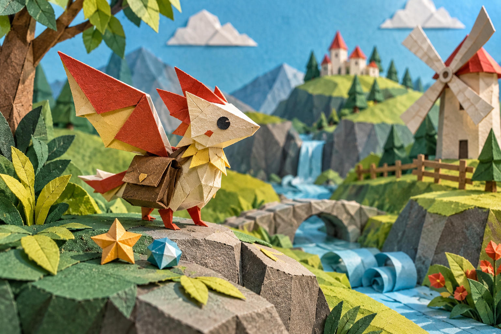

A
Collection / pocket
Scrapbook cutouts
Choose one cutout to preview its paper edge.
Paper studio / folio 02
A collection of independent paper UI parts, laid out like a maker's table.

Collection / pocket
Choose one cutout to preview its paper edge.
Wearable / folded panel
A paper piece is only a preview until applied.
Route / accordion strip
Select a stop, then unfold the route.